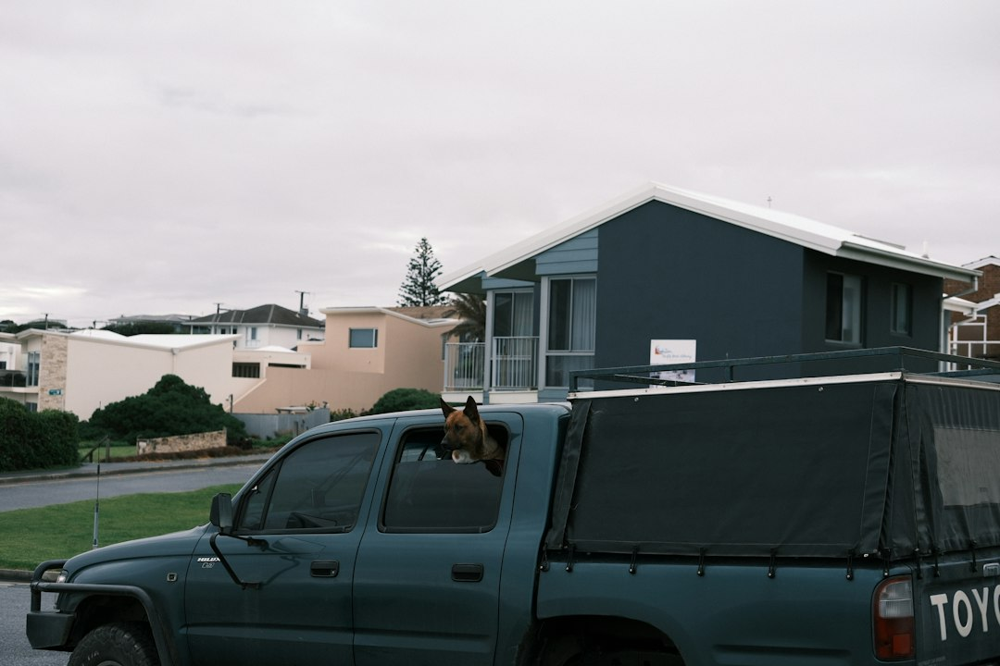

Adelaide wet-area projects are not only about tile choice. The source page names 6 service categories, 15 local areas and 3 planning stages: describe the condition, separate the layers and compare written scope. A useful brief should record the room, visible moisture, existing surface, drainage, fixtures, tile format and access issues before a contractor confirms preparation, waterproofing, movement joints and finish details in writing.
For homeowners comparing tiling and waterproofing adelaide options, the useful starting point is the room condition, the substrate below the finish and the written scope behind the quote.
Tiling and Waterproofing Adelaide Explained
Adelaide Tiling & Waterproofing frames a good project brief around the visible finish and the concealed wet-area details together. That is a useful discipline because tiles, grout lines and trims are only the final surface. The base, falls, junctions, penetrations and membrane decisions have to be understood before the finish can be priced with confidence.
For a bathroom, ensuite or laundry, describe what is already known before asking for a quote. Name the room, whether moisture is visible, what has previously been repaired, which fixtures may move and what surface is currently tiled. Photos and approximate dimensions can help later, but the first decision is whether the enquiry is about a new finish, a suspected leak, a repair or a broader renovation.
- Record the existing surface and any cracking, loose tiles or deteriorated grout.
- Separate plumbing, substrate, waterproofing and tile finish assumptions.
- Ask for preparation, inclusions, exclusions and licensed work details to be written down.
When regrouting is too narrow
The source page makes a clear distinction between maintenance and leak diagnosis. Regrouting may suit a surface maintenance issue, but it should not be treated as a universal shower leak repair. Moisture symptoms can come from sealant, plumbing, substrate movement or the membrane system, so a diagnosis-led scope is safer than choosing the cheapest visible fix.
Ask what the contractor has assumed about the wet-area membrane, wastes, corners, thresholds and penetrations. If the answer only discusses grout colour or silicone, the scope may be missing the concealed work that decides whether the repair matches the cause. For a broader look at tile layout and substrate questions, the related bathroom tiling guide for Adelaide homes is the natural companion.
Renovation timing and trade interfaces
A bathroom renovation joins several decisions that are easy to price separately but difficult to fix later. Demolition, plumbing and electrical rough-ins, floor falls, cabinetry, niches, trims, movement joints and adjoining floor heights can all affect the tile layout and waterproofing boundary. Treat the sequence as one scope, not a set of disconnected trade visits.
Before demolition, note access, suspected moisture, fixtures that may move and any questions that need to be checked before surfaces are opened. Before waterproofing, confirm the substrate, falls, wastes, penetrations, thresholds and membrane system with the responsible provider. Before tiling, settle tile modules, trims, movement joints, cabinetry lines and transitions to nearby floors.
That order gives each provider a clearer handover point. It also makes variations easier to discuss because the written scope can show which layer changed: base preparation, membrane detailing, set-out or finish selection.
Local situations that can change preparation
Locality is most useful when it changes the work, not when it becomes a suburb list. The source page gives practical Adelaide examples: apartment access in the city, coastal exposure at Glenelg and Henley Beach, older villa substrates through Norwood and Unley, and newer slabs around Mawson Lakes or Mount Barker. Each setting raises a different question for the quote.
For an apartment, ask how access, lift use, waste removal and working space affect sequencing. For a coastal or outdoor area, ask how exposure, drainage and slip needs are being considered. For an older villa, ask how the existing substrate will be assessed before tile format, adhesive and preparation are locked in. For a newer slab, ask how movement and adjoining floor transitions will be handled.
What a useful quote should show
A clear quote should do more than name an area and a tile price. The source page says a useful Adelaide tiling quote identifies preparation, tile format, layout, trims, grout, movement joints, access and waste. Waterproofing or screeding should be separately described where required, so the reader can see what is included and what remains an assumption.
Check whether the contractor has described the room, water exposure, fixtures, drainage and tile format together. For wet areas, ask who is responsible for confirming the membrane system, cure requirements and product records. Cure time depends on the membrane system, film thickness and site conditions, so the installer should follow the product specification rather than rely on a universal waiting period.
If one contractor covers both waterproofing and tiling, ask them to confirm the appropriate South Australian authorisation for the work involved. The source page says these services may sit within one coordinated scope where the contractor holds the suitable authorisation, but the licence scope should be checked before accepting the quote.
- Describe the room. Name the room, age, visible symptoms, existing finish and any previous repairs.
- Separate the layers. List what is known about plumbing, substrate, waterproofing, screed, drainage and tile finish.
- Request written scope. Ask for preparation, inclusions, exclusions, product assumptions, licence details and sequencing to be recorded.
- Compare like with like. Review whether each quote covers the same hidden layers before comparing the final finish.
| Situation | Main question | Quote detail to request |
|---|---|---|
| Surface refresh | Is the issue only visible finish wear? | Preparation, grout, trims, waste and exclusions |
| Suspected shower leak | What layer is causing moisture symptoms? | Diagnosis assumptions across sealant, plumbing, substrate and membrane |
| Full renovation | How will trades hand over between layers? | Demolition, rough-ins, falls, waterproofing, tiling and transitions |
| Outdoor or alfresco area | How will exposure and drainage affect the finish? | Substrate movement, drainage, slip needs and tile selection assumptions |
Common questions
Do tiles make a shower waterproof? No. The source page states that tiles and grout are finishes, while the compliant membrane and correctly treated junctions form the waterproof layer behind them.
Can one contractor handle waterproofing and tiling? The source page says they may be delivered within one coordinated scope where the contractor holds the appropriate South Australian authorisation for the work involved. Check the licence scope before accepting a quote.
How long should waterproofing cure before tiling? There is no universal period given in the source page. Cure time depends on the membrane system, film thickness and site conditions, and the installer should follow the product specification and record the system used.
What should I include in an enquiry? Include what is tiled, what is changing, the suburb and whether moisture is visible. The source page also suggests photos, approximate dimensions and known product details can be discussed after the first enquiry.
This guide covers planning, quote checks and scope questions for Adelaide tiling, wet-area waterproofing, shower repairs and renovation interfaces.